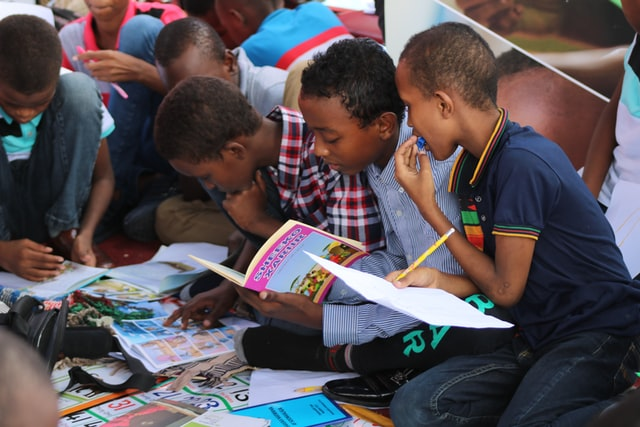
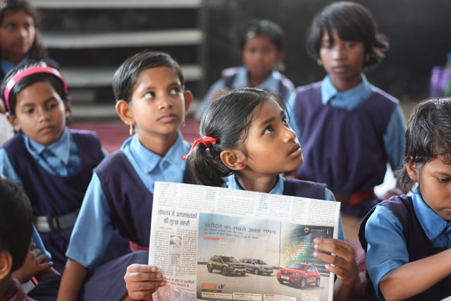

Education is the movement
from darkness to light
A proper education sets people up to grow personally, professionally, and socially. It can awaken joy, curiosity and a deep desire to solve problems and help others. Plus, teaching a student can inspire them to pursue leadership roles and positively impact those around them.


Education is the one thing no one else can take away from you
One of the other many benefits of education is that it can broaden a student’s horizons, helping them understand more about other cultures and corners of the world beyond the school door.
Neutra shabby chic ramps, viral fixie.